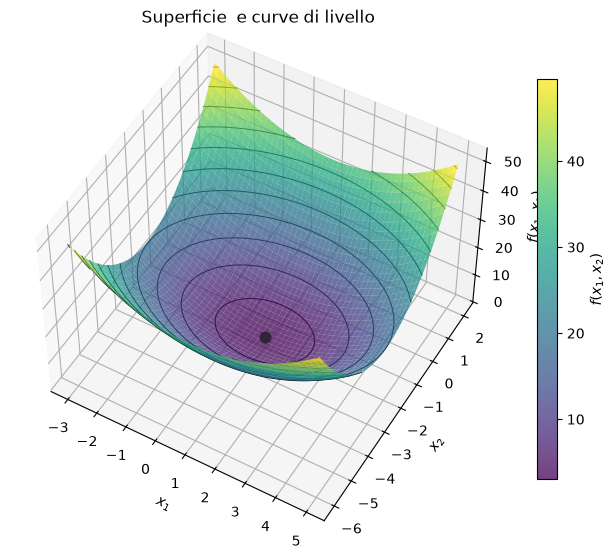
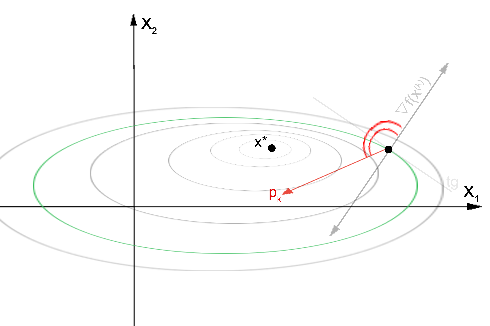
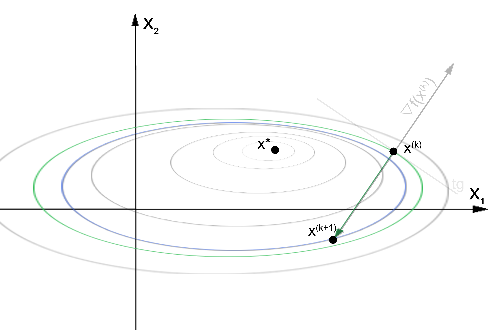
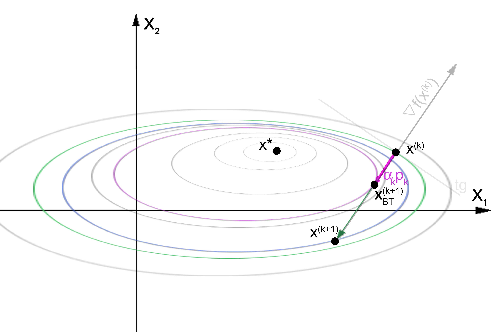

Homework 1: Ottimizzazione#
Warning
Lo svolgimento di questa esercitazione è obbligatoria per sostenere l’esame l’orale, che consiste in una discussione di tutti gli homework (HWs 1-4). Le domande, infatti, riguarderanno il codice sviluppato, i risultati ottenuti e la teoria collegata alle esercitazioni.
Ogni esercitazione dovrà essere svolta eseguendo tutte le prove richieste.
All’orale occorre presentare:
i NoteBook di Python (come quelli utilizzati a lezione), con celle di codice contenenti le soluzioni agli esercizi. Il codice NON deve essere commentato.
un unico report per HW, in formato PDF e contenente immagini di plot e screenshot dei soli risultati.
Testo degli esercizi#
Esercizio 1: qui
Esercizio 2: qui
Esercizio 3: qui
Algoritmi di discesa#
Data una funzione \( f : \mathbb{R}^n \to \mathbb{R}\), vogliamo risolvere il problema di minimo

Per determinare il punto di minimo \(x^* \in \mathbb{R}^n\), usiamo un algoritmo di discesa, cioè un algoritmo iterativo che genera una successione di punti secondo la regola
dove \(p^{(k)}\) è una direzione di discesa per \(f\).

Il metodo della discesa del gradiente#
In questo algoritmo, si sceglie sempre la direzione di discesa come l’antigradiente, ossia
Di conseguenza, l’aggiornamento assume la forma \( \mathbf{x}^{(k+1)} = \mathbf{x}^{(k)} - \alpha_k \nabla f(\mathbf{x}^{(k)})\).
Esempio con \(\alpha_k = 1\):

Focus: il criterio di arresto#
L’algoritmo di discesa termina quando la norma del gradiente è sufficientemente piccola
oppure quando viene raggiunto il numero massimo di iterazioni.
import numpy as np
def discesa_gradiente(
f, # funzione obiettivo
grad_f, # gradiente della funzione obiettivo
x0, # punto iniziale
alpha=1.0, # lunghezza del passo, alpha>0
tol_grad=1e-6, # tolleranza sulla norma del gradiente
maxit=1000 # massimo numero di iterazioni
):
"""
Discesa del gradiente con passo fisso.
"""
# Inizializzazioni
x = np.asarray(x0, dtype=float).copy()
k = 0
fx = f(x)
grad = grad_f(x)
grad_norm = np.linalg.norm(grad)
history = {
"x": [x.copy()],
"f": [fx],
"grad_norm": [grad_norm]
}
# Ciclo iterativo di risoluzione
while grad_norm > tol_grad and k < maxit:
# Direzione di discesa
p = -grad
# Aggiornamento dell'iterata
x = x + alpha * p
k += 1
# Aggiornamento delle quantità
fx = f(x)
grad = grad_f(x)
grad_norm = np.linalg.norm(grad)
# Salvataggio della storia
history["x"].append(x.copy())
history["f"].append(fx)
history["grad_norm"].append(grad_norm)
if grad_norm <= tol_grad: # x è punto stazionario
print(f"Convergenza numerica raggiunta in {k} iterazioni.")
else:
print("Raggiunto il numero massimo di iterazioni.")
return x, history
Focus: il passo di discesa e il backtracking#
Il parametro \(\alpha_k>0\) rappresenta la lunghezza del passo di discesa. Può essere costante e non variare mai nelle iterazioni, oppure può variare usando una regola di backtracking. In questo secondo caso, si parte da un valore iniziale \(\alpha_0\) e lo si riduce secondo la regola
finché non viene soddisfatta la condizione di Armijo:
Attenzione: se \(\alpha_k\) diventa troppo piccolo, il passo diventa troppo breve e non si converge velocemente alla soluzione! E’ bene quindi impostare una soglia (parametro \(\tau\)) al di sotto del quale il backtracking si ferma per garantire \(\alpha_k\geq\tau\).
Esempio con backtracking (BT):

import numpy as np
def discesa_gradiente_bt(
f, # funzione obiettivo
grad_f, # gradiente della funzione obiettivo
x0, # punto iniziale
alpha0=1.0, # lunghezza del passo iniziale, 0<alpha
rho=0.5, # fattore di riduzione del passo, 0<rho<1
c1=1e-4, # parametro della condizione di Armijo, 0<c1<1
tau=1e-12, # lunghezza del minimo passo ammesso, 0<rho<alpha
tol_grad=1e-6, # tolleranza sulla norma del gradiente
maxit=1000 # massimo numero di iterazioni
):
"""
Discesa del gradiente con backtracking di Armijo.
"""
# Controlli sugli imput
if not 0 < rho < 1:
raise ValueError("rho deve appartenere a (0, 1).")
if not 0 < c1 < 1:
raise ValueError("c1 deve appartenere a (0, 1).")
if not 0 < tau <= alpha0:
raise ValueError("tau deve essere positivo e non superiore ad alpha0.")
# Inizializzazioni
x = np.asarray(x0, dtype=float).copy()
k = 0
fx = f(x)
grad = grad_f(x)
grad_norm = np.linalg.norm(grad)
history = {
"x": [x.copy()],
"f": [fx],
"grad_norm": [grad_norm],
"alpha": []
}
# Ciclo iterativo di risoluzione
while grad_norm > tol_grad and k < maxit:
# Direzione di discesa
p = -grad
# Scelta del passo di discesa
alpha = alpha0
while f(x + alpha * p) > fx + c1 * alpha * np.dot(grad, p): # Backtracking di Armijo
if alpha <= tau:
print("Passo minimo raggiunto senza soddisfare Armijo.")
return x, history
alpha = max(rho * alpha, tau)
# Aggiornamento dell'iterata
x = x + alpha * p
k += 1
# Aggiornamento delle quantità
fx = f(x)
grad = grad_f(x)
grad_norm = np.linalg.norm(grad)
# Salvataggio della storia
history["x"].append(x.copy())
history["f"].append(fx)
history["grad_norm"].append(grad_norm)
history["alpha"].append(alpha)
if grad_norm <= tol_grad: # x è punto stazionario
print(f"Convergenza numerica raggiunta in {k} iterazioni.")
else:
print("Raggiunto il numero massimo di iterazioni.")
return x, history